| Interaction Designer | Alexey Opokin |
|---|---|
| Visual Designer | Georgios Koultouridis |
| PM | Joost Pennings |
| ENG OWNER | Dennis Jakobsen → please assign |
| Visual Design Specification | www.figma.com |
Road signposts are signs that are placed along roads and Motorways to provide drivers with information about the roadway, the surrounding area, and the rules and regulations that apply to driving. Road signposts can be used to indicate the presence of various features or hazards on or near the roadway, such as intersections, pedestrian crossings, and construction zones, as well as to provide directions and other information to drivers.
Road signposts are typically made from durable materials, such as metal or plastic, and are designed to withstand the elements and remain visible to drivers under a variety of conditions. They may be placed on the side of the road or on overhead structures, such as overpasses or bridges, depending on the type of sign and the location in which it is being used.
Road signposts may use a variety of symbols, colors, and other visual elements to convey information to drivers. These elements are typically standardized to help ensure that road signs are easily understood by drivers regardless of their language or cultural background.
Road signpost information is captured by the NDS map and should be used by the Guidance.
There are various attributes of the instruction that are coming from Signpost data.
| Item | Context | Mandatory | Occurence | Source | Description | |
|---|---|---|---|---|---|---|
| 1 | Next Instruction schematic image (Manoeuvre arrow) | any | yes | Single | Instruction type | Graphical image representing next manoeuvre schematically |
| 2 | Distance to next instruction | not applicable for some special instructions | yes | Single | GPS tracking | Distance to point of main manoeuvre. Distance units follow special formatting rules described here: G_008 Distance and Time Notation#Distanceformatting |
| 3 | Road Name Representation of Directional Information | any | No | Single | Map data or Signpost | Road name (part of Directional info) is a road driver will continue on after completing manoeuvre. There are two use cases here that need to be separated: 1. Signpost is not available for the manoeuvre. In this case Road name is taken from map data as a name of a road manoeuvre leads to. NOTE: Only significant roads should be selected. Connecting road links should not be mentioned. 2. Signpost is available. In this case Road name must be in sync with signpost information even if map date provides different information. Road names ofter refer to the same object as Road numbers. Additional information about usage of Road names and Road Numbers provided in this document: Directional Information (Road names, Road numbers) |
| 4 | Road Number Representation of Directional Information | any | No | Multiple | Map data or Signpost | Road number (part of Directional info) is a number assigned to a road and usually corresponds to the Road name above. Visually road numbers represented as graphical shapes which vary by location and the number inside. Sometimes Road numbers have direction (East) attached to them. Some roads have both: Road name and Road numbers, some only road names and some only road numbers. There are two use cases here that need to be separated: 1. Signpost is not available for the manoeuvre. In this case Road number is taken from map data as a number of a road manoeuvre leads to. Only significant roads should be selected. Connecting road links should not be mentioned. 2. Signpost is available. In this case Road number must be in sync with signpost even if map date provides different information. If multiple Road numbers provided, only those that route goes through must be displayed. Road names ofter refer to the same object as Road numbers. Additional information about usage of Road names and Road Numbers provided in this document: Directional Information (Road names, Road numbers) |
| 5 | Towards Information | any | No | Single | Signpost | An area/city TOWARDS which the user will be heading after the manoeuvre. This information is taken from Signpost. If multiple Towards are provided there, we should show the one that Route goes through and ignore others. NDS DATA NDS DATA ISSUE Currently in NDS data, Road names/numbers sometimes provided as Towards information. This seems to be incorrect and needs to be clarified with NDS. For now, we provide some heuristic algorithm that filters out Road names/numbers from Towards information. |
| 6 | Exit Numbers | Highways only | No | Multiple | Signpost | Exit Number is a method by which exits are identified on roads in most areas. must match the real-world sign information Could contain an array of numbers with or without cardinal direction information (i.e. Sout-East) EXCEPTION In some areas (California and Russia are known to have such logic) exit numbers are not used always or not used at all. Instead to identify the exit they use Towards or Directional information. |
| 7 | Lane guidance | on multi-lane roads | No | Single | Guidance engine | Graphical image representing lane structure at the point of next manoeuvre |
| 8 | Chain Instruction | any | No | Single | Guidance engine | Is used where another manoeuvre occurs very soon after the main manoeuvre. |
| 9 | Intersection Name | any | No | Single | Signpost | Some intersections are identified by Intersection name. In this case we reflect the intersection name in the NIP. |
[!NOTE] Please Note
Items #3,4,5 must match SignPost information for this particular manoeuvre if it is available. If any of these items are not available in the signpost, they should not be shown in the NIP either.
If road geometry is contradicting with Signpost information, Signpost information overwrites road geometry.
If Signpost is not provided at all for this particular manoeuvre, road name (#3) should be taken from next Significant road name and not connecting path which might lead to this road.
Signposts are important source of information and when provided, should be used as a primary source of information. Signpost might include various attributes: Signpost color, Road Name, Road Number, Towards, Exit number, Exit Name.
Signposts have various color in different regions. In Guidance we would like to reflect the color of the signpost in the NIP color to to establish visual connection between them.
| US | EU | Japan |
|---|---|---|
| 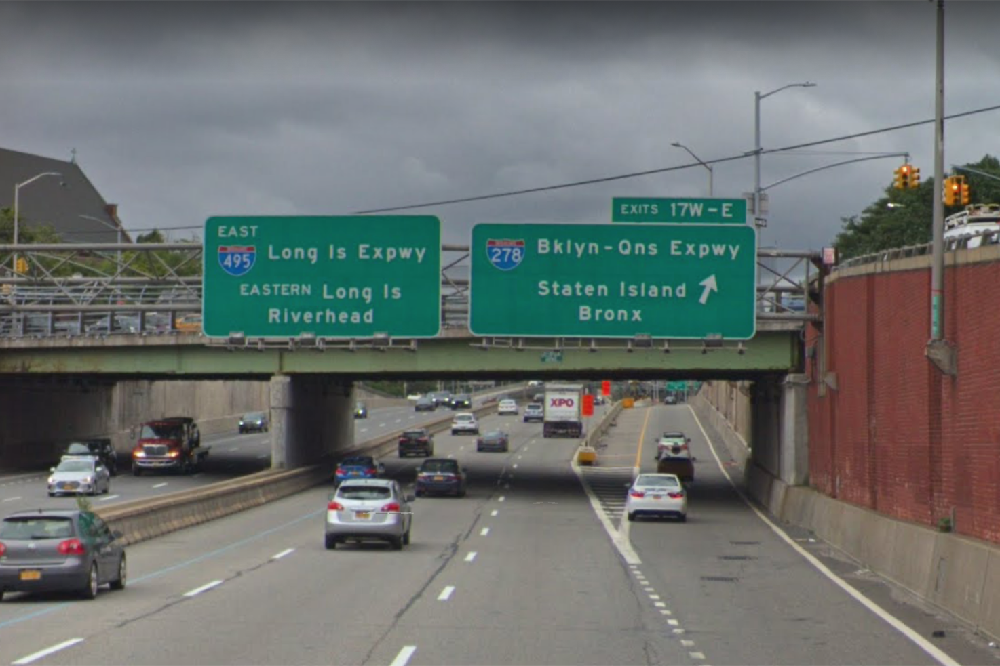 | 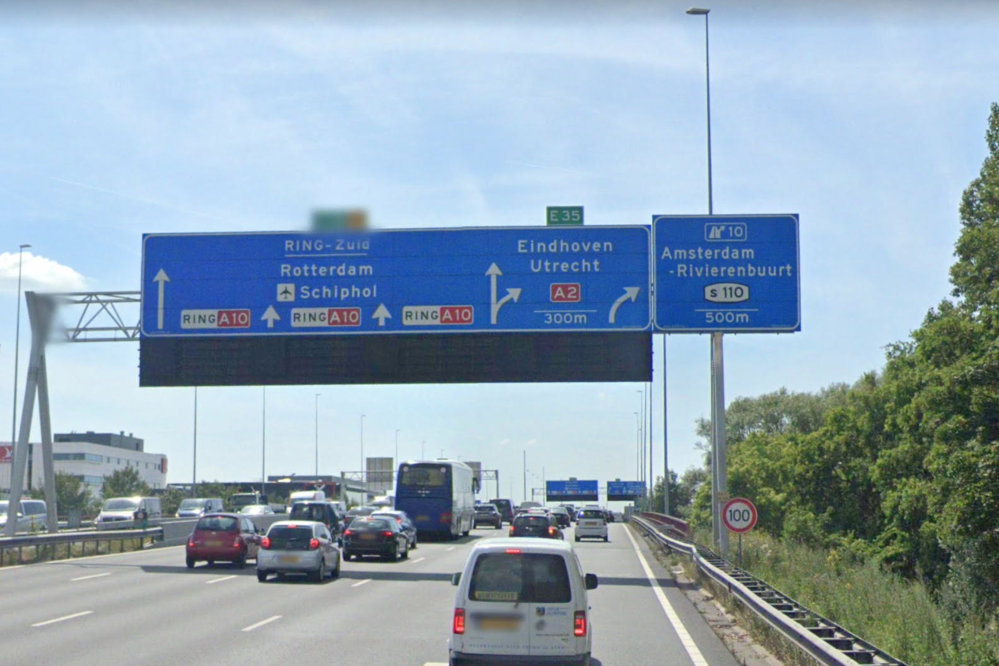 | 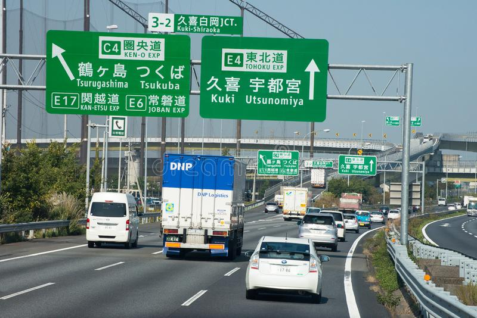 |
| 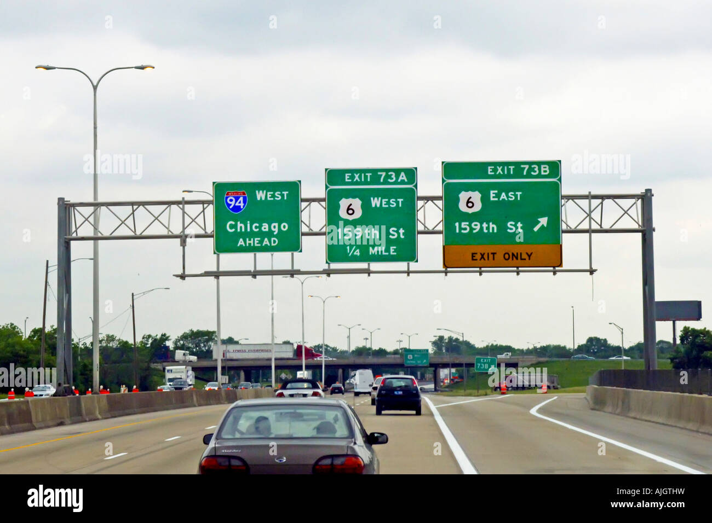 | 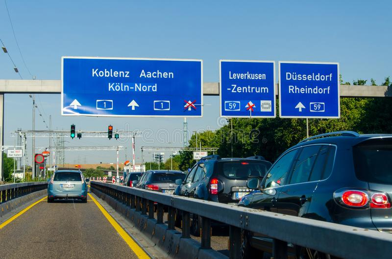 | 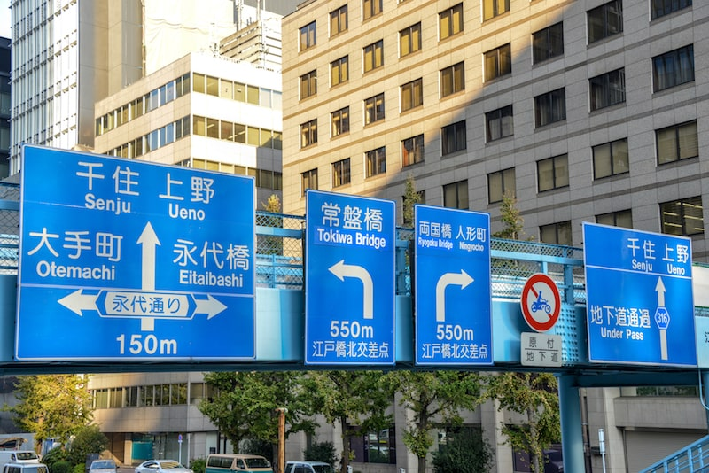 |
| Green is typically used for guidance signs, which are signs that provide drivers with information about the roadway, the surrounding area, and directions to destinations. Examples of guidance signs that may be green in color include directional signs, such as signs indicating the direction to a nearby town or city, and signs indicating the presence of a service area or rest stop. | Blue is typically used for guidance signs on Motorways (and Yellow color for other road classes), which are signs that provide drivers with information about the roadway, the surrounding area, and directions to destinations. Examples of guidance signs that may be blue in color include directional signs, such as signs indicating the direction to a nearby town or city, and signs indicating the presence of a service area or rest stop. | In Japan both Green and Blue colors are used for signposts. It is unclear what the rule for color differentiation there. Green is typically used for guidance signs, outside of Urban areas, while Blue is used in Cities. This information is unconfirmed, though. |
Road number information in a signpost refers to the numerical designation of a road or highway. These numbers are often used to identify and distinguish different roads from one another and can be used to provide directions and navigate from one location to another. In many countries, roads are assigned unique numbers that are displayed on signs along the road and on maps. The numbers can indicate the type of road, such as a motorway, national highway, or local road, and can also provide information about the route and location of the road. Road numbers are typically displayed on signposts at intersections and other points along the road to help drivers identify their location and stay on the correct route.
Road number is one of the methods of road identifications. Another method is Road name. Both road name and road numbers define Road ID = Road Number + Road Name. Any of this methods can be optional.
In the United States, road numbers are typically assigned by the federal government and are organized into a hierarchical system. The highest level roads are called Interstates and are designated by a three-digit number prefixed with an "I". These roads are typically the most important and heavily traveled roads in the country, and they often connect major cities and regions. The numbers of Interstates are assigned based on their location and the direction in which they run, with odd numbers generally running north-south and even numbers running east-west.
In addition to Interstates, the United States also has a system of U.S. Routes, which are numbered highways that typically connect smaller towns and cities. These roads are designated with a two-digit number prefixed with a "US" and are generally not as important or heavily traveled as Interstates.
In Europe, road numbers are typically assigned and maintained by individual countries or regions, and the numbering systems can vary widely. In general, however, European road numbers are often assigned based on the type and importance of the road. For example, major international highways may be designated with a single-digit number, while national highways may be designated with two-digit numbers and regional roads may be designated with three-digit numbers. In some cases, European road numbers may also be prefixed with a letter, such as "A" for a major road or "N" for a national road.
| Germany | Germany | Netherlands | US | Japan |
|---|---|---|---|---|
| 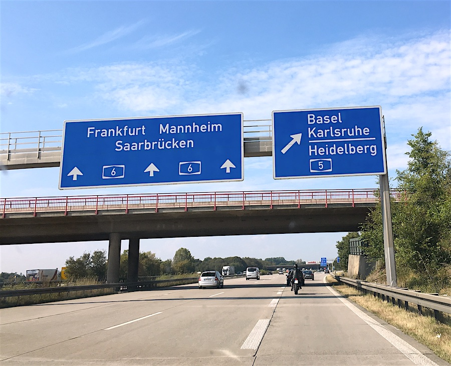 | 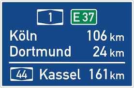 | 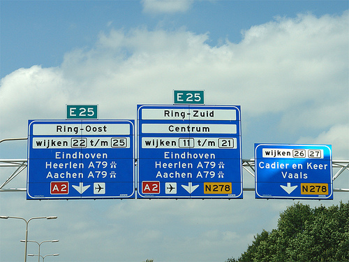 |
When multiple road numbers are displayed in the signposts, those can also be displayed in the NIP, however different NIP configuration have different limits of information. As a general rule, only those road numbers should be used that actual route is going through. If multiple, the furthest road number should be used.
“Road Name” attribute in a signpost refers to the same type of object (Road) as Road number, but its identification is represented by Name rather than Number. Usually, Road number represent a highest order (longest stretch) and Road name might be used to indicate the segment of it.
| US | US |
|---|---|
| Road name(Bklyn-Ons Expwy) and Road number (i275). Both refer to the same road. | Road Name 159th st. |
When multiple road names are displayed in a signposts, we need to select the one that will be used by the Instruction (NIP). Only one road name can be displayed and announced by audio. The heuristic for this selection should identify this road name that actual route is going through. If multiple, the furthest road number should be used.
It can happen that map data provides different Road name from the Signpost. In this case, Signpost information should be trusted.
Towards information in a signpost refers to the destination or direction that a road or highway is heading. Signposts often include this information to help drivers navigate and find their way to their desired destination. The towards information is typically displayed along with the road number or route name and may include the name of a city, town, or other destination. For example, a signpost may display "I-95 North towards Baltimore" to indicate that the road is heading north and will take drivers to the city of Baltimore. Towards information can also be used to provide information about the route and location of the road, such as "M25 London Orbital towards Heathrow Airport" to indicate that the road is an orbital route around London and will take drivers to Heathrow Airport.
“Towards” attribute - Location (Place, City, Town, Village, District, Airport, Major POI) that is used in a signpost to indicate direction of the road that this signpost describes (Examples: Rotterdam, Schiphol, Utrecht).
| Germany | US | Netherlands |
|---|---|---|
Only one “towards” is displayed in the NIP. If multiple "towards" attributes available in the signpost, following logic should be applied: Out of all "towards", filter out those that current route does not go through. NOTE: If all "towards" filtered out by this logic, keep the most frequently used in the current route. If more than one "towards" remain after filtering, Select the "towards" that is more remote on the route.
Exit numbers on motorways, also known as freeways or highways, refer to the numerical designations assigned to exits or off-ramps along the road. Exit numbers are typically displayed on signs along the road and are used to identify and distinguish different exits from one another. The exit numbers typically increase as you travel along the motorway, with lower numbers indicating exits that are closer to the starting point of the road and higher numbers indicating exits that are farther away.
Exit numbers can be used to provide information about the location and destination of the exit, and they can be helpful for drivers who are trying to navigate and find their way to a specific destination. For example, an exit number may be displayed as "Exit 42" and may be accompanied by a sign indicating the name of the road or destination that the exit leads to, such as "Exit 42: Main Street". In some cases, exit numbers may also be accompanied by additional information, such as the distance to the exit or the direction in which the exit leads.
The format for exit numbers might vary by region.
| US | US | Netherlands | Russia |
|---|---|---|---|
| 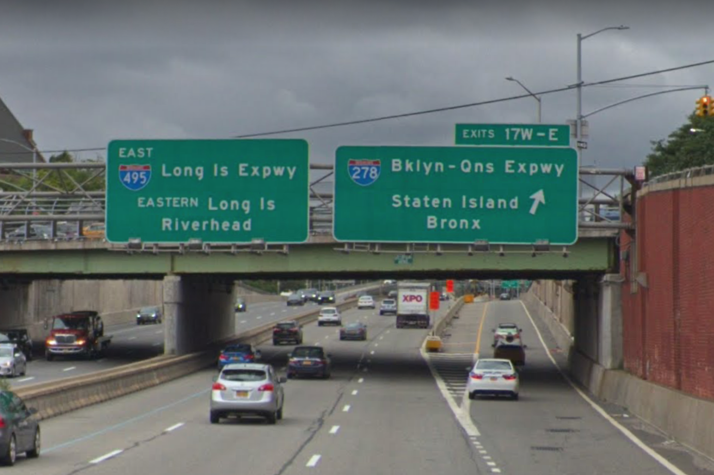 | 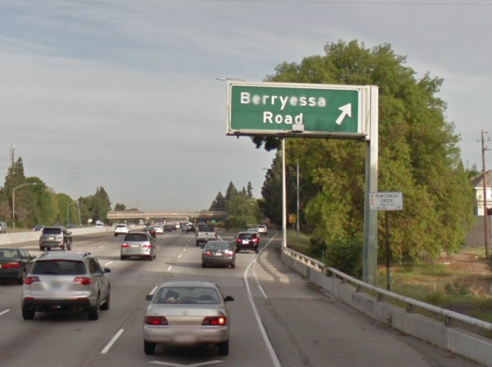 | 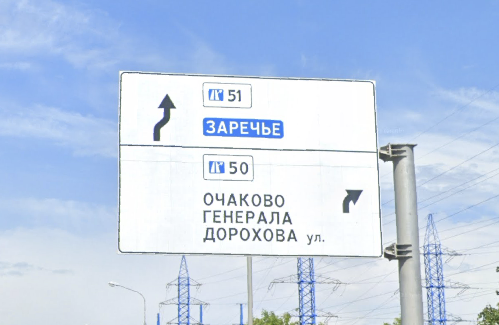 | |
| EXIT 17W - W stands for West and should be announced by audio instruction as West) EXITS 82 A-B -Sometimes range of multiple exits can be displayed |
In some areas (California US, Russia) Exit names are common instead of Exit Numbers. Those Exit names are usually refer to a road name they lead to or Towards information. That makes them similar to Directional or towards information we described before, therefore they should be treated as directional towards information in guidance. For Example in given case the instruction should be: Take the exit for Berryessa Road Exit doesn't have a name in the instruction, but towards target is used instead. |
10 - in EU exits are usually represented simply by number attached to graphical sign of Exit | In some countries (for example Russia) Exit numbers are not mandatory and might be absent from signposts. In those cases only towards or directional information is present. |